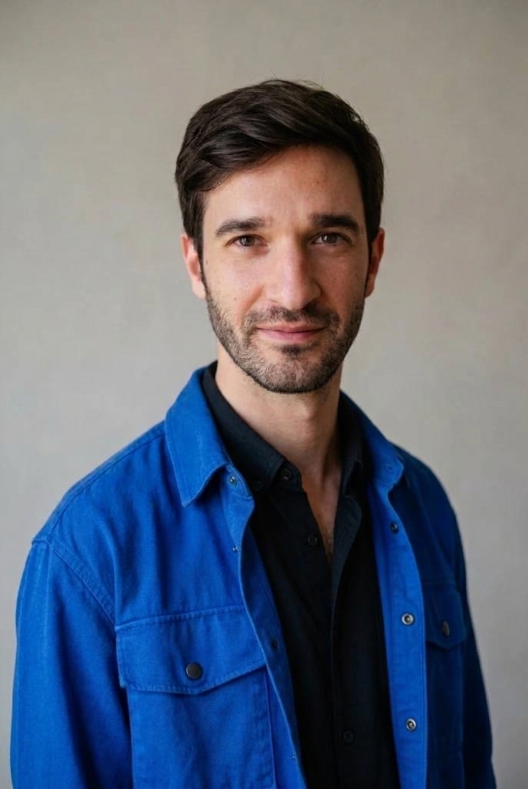
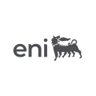
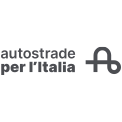

Complex problems, clear thinking
I make complex digital products easier to understand, use and navigate, without compromising what makes them powerful

Hi, I’m Damiano
I'm a multidisciplinary designer from Venice, Italy, with 16 years of experience across digital products, branding, fashion and industrial design.
After a decade shaping brands and physical products, I moved into digital experiences. Since then, I've been untangling complexity in EV mobility, AI-powered tools and, most recently, Kubernetes optimization at Akamas.
What I bring
UX research
Evidence before opinions
User interviews, usability testing, field research and competitive analysis. I challenge assumptions with evidence, not personal preferences.
Product design
From concept to shipped product
I turn complex workflows into intuitive experiences, working closely with engineering from early exploration to implementation.
Design systems
One rule, everywhere
I build reusable components and shared design principles that keep products consistent as they evolve.
Branding & Art Direction
Brand and product as one system
I connect visual identity and digital experiences, bringing years of branding and art direction into product design.
Trusted by

